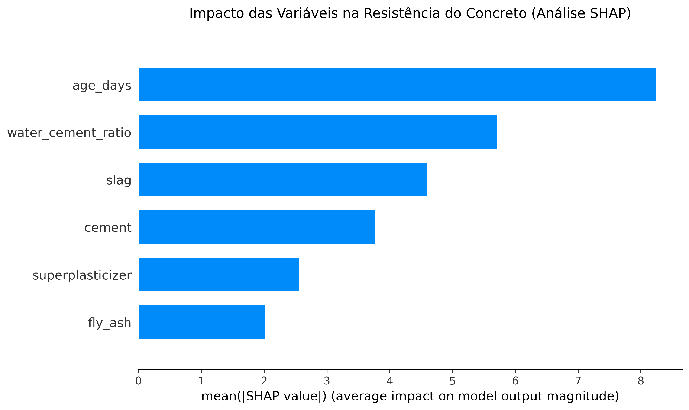

Aplicações de Cálculo Numérico, Machine Learning (XGBoost) e Algoritmos Genéticos para otimização de traços na Construção Civil.
Teste as predições do modelo matemático e a Otimização Multi-objetivo na prática.
Quanto maior o Fator A/C (mais água), mais poroso e fraco o concreto se torna. Nossa IA "pune" traços muito diluídos!
Encontra o menor custo comercial possível que garanta a resistência exigida pelo projeto.
Receita Matemática Sugerida:
Imagine que o XGBoost é um comitê com 500 engenheiros especialistas (que na fórmula são chamados de Árvores ou $K$). O 1º especialista dá um palpite inicial de resistência. O 2º olha apenas para o erro do primeiro e tenta corrigir. O 3º corrige o erro do segundo, e assim por diante. No final, a IA simplesmente soma a opinião de todos eles para chegar ao traço perfeito!
Matematicamente, em vez de usar regressões lineares simples, o sistema utiliza uma soma aditiva dessas funções. Cada árvore ($f_k$) corrige o resíduo da anterior, definida pela equação:
O cálculo passo a passo dessa soma na prática:
Baseado nas árvores, veja quais materiais têm maior impacto na hora de dar os palpites finais.
Para evitar que o algoritmo crie "receitas impossíveis" (Overfitting), ele minimiza uma função objetivo rigorosa composta por um termo de perda e um termo de regularização $(\Omega)$:
Na engenharia real, a mistura do concreto sofre variabilidade natural. Não basta prever a média de resistência; precisamos garantir a segurança contra rupturas. Para calcular a probabilidade de o concreto não atingir o Alvo do Projeto, modelamos o erro do XGBoost (RMSE = 4.80) como a dispersão de uma Distribuição Normal.
O Risco de Ruína é exatamente a área sob a curva à esquerda do alvo exigido, calculada através da integral definida da Função Densidade de Probabilidade (PDF):
↑ O gráfico acima reage em tempo real às suas simulações. Tente gerar um traço com Risco Elevado para ver a área de ruptura estrutural engolir a curva.
Este cálculo foca na proporção da massa ($kg/m^3$). Em campo, patologias podem surgir devido a fatores externos, tais como:
Durante o desenvolvimento do modelo em Python, o dataset foi dividido em 804 amostras para treino e 201 para teste. A regressão linear sofreu de underfitting severo devido à não-linearidade química da cura do concreto. O XGBoost provou ser o campeão absoluto na nossa bateria de testes:
{'subsample': 0.8, 'n_estimators': 500, 'max_depth': 3, 'learning_rate': 0.2, 'colsample_bytree': 0.8}Na modelagem estatística, o "R² de vaidade" ocorre quando um modelo apresenta uma métrica de acerto artificialmente alta devido a variáveis redundantes (fenômeno conhecido como Multicolinearidade). No caso do concreto, como o volume final é constante ($1m^3$), variáveis como Água, Areia e Brita são matematicamente dependentes, o que pode "enganar" algoritmos preditivos.
Para blindar o sistema, foi aplicada uma rigorosa validação estatística (análise VIF - Variance Inflation Factor). Através de Feature Engineering avançada, isolamos o ruído dos agregados e convertemos a entrada primária na Relação Água/Cimento (Fator A/C). Assim, o modelo não apenas "decora" volumes, mas de fato reproduz a química estrutural da mistura (Lei de Abrams).
O gráfico abaixo comprova visualmente a assertividade da validação: a Inteligência Artificial compreendeu a física do problema e definiu o Fator A/C e a Idade de Cura como os reais motores da resistência, penalizando ou recompensando o MPa da mesma forma que um Engenheiro Civil faria.

Este gráfico de barras revela o "peso" que a Inteligência Artificial dá a cada variável na hora de calcular a resistência. Quanto maior a barra, maior o impacto no cálculo final. O modelo surpreendeu ao ir além do senso comum:
Para que a Inteligência Artificial consiga prever a resistência com precisão, o modelo foi treinado com mais de 1.000 ensaios reais de compressão de corpos de prova. Utilizámos a prestigiada base de dados de betão da UCI Machine Learning Repository, combinada com ensaios contemporâneos focados em misturas sustentáveis (com adição de escória e cinza volante). O algoritmo mapeou e aprendeu a correlação química de 8 materiais diferentes, desde o 1º até ao 365º dia de cura.
Abaixo, uma amostra das 10 primeiras linhas do nosso banco de dados unificado de laboratório. Clique nos títulos para ordenar.
Baixar CSV Completo| Cimento | Escória | Cinza | Água | Aditivo | Brita | Areia | Idade | Fator A/C | Custo (R$) | Resistência (MPa) |
|---|---|---|---|---|---|---|---|---|---|---|
| A sincronizar dados da API com o laboratório na nuvem... | ||||||||||
O histograma revela a concentração de testes em cada faixa de resistência. A curva ilustra a distribuição normal (Sino de Gauss) esperada dos dados.
Comprova as interações químicas: tons vermelhos indicam crescimento proporcional. Tons azuis indicam relação inversa (ex: Água x Resistência).